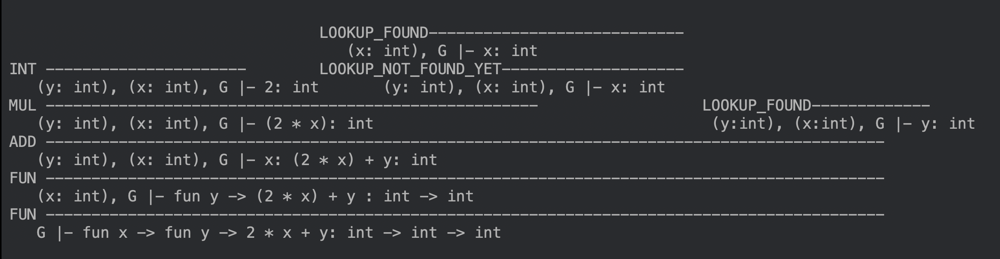
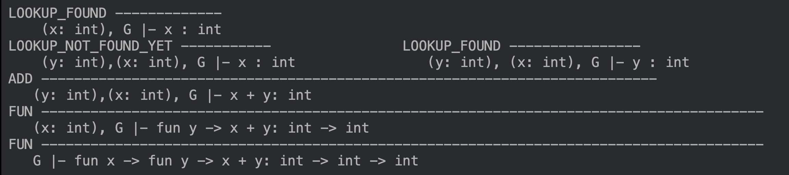
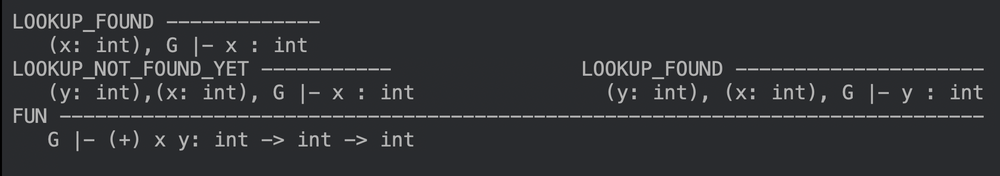
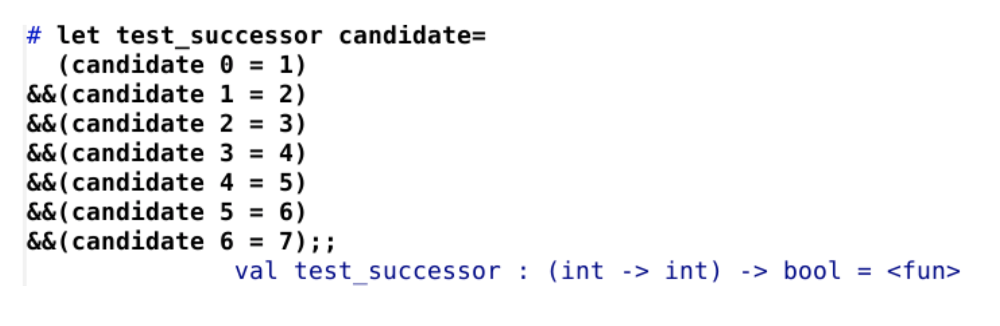
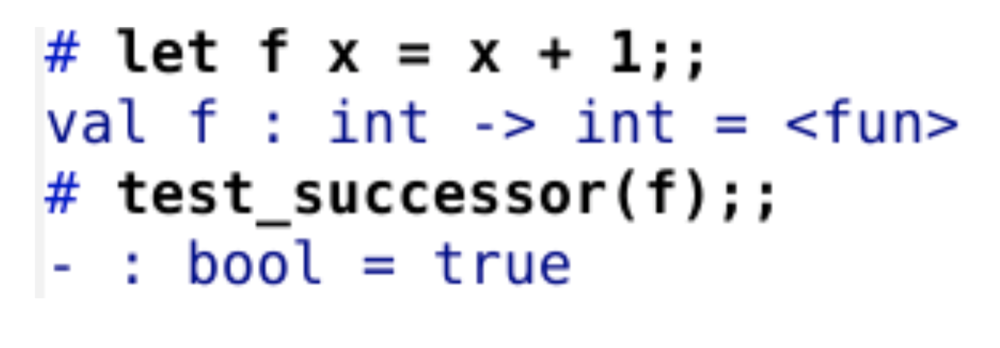
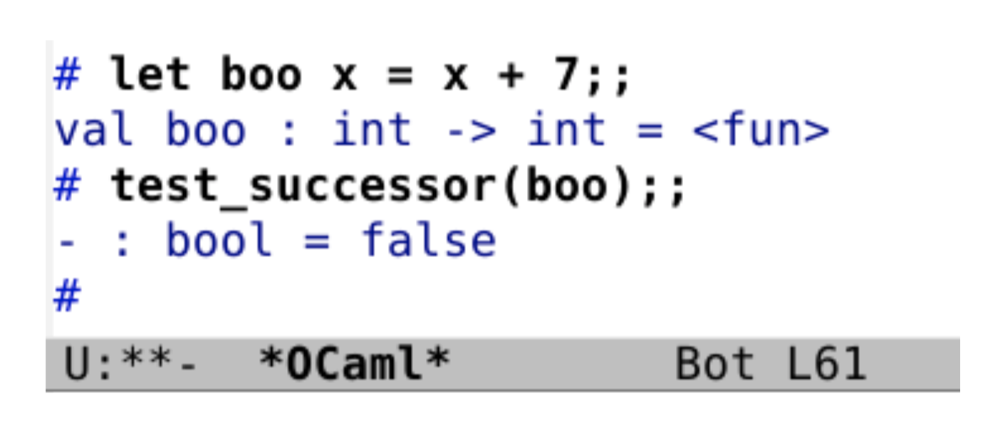

Oh! Caml On! Testing OCaml with Ocaml
Table of Contents
- 1. Introduction
- 2. Exercise 7: Finding the Type of a Given Expression
- 3. Exercise 9: Proof Tree for the Given Expression
- 4. Exercise 10: Implementing and Testing the Successor Function
- 5. Exercise 11: Unit Testing a Negation Function
- 6. Exercise 13: Unit Testing a Twice-Less-Than Comparison Function
- 7. Exercise 15: Unit Test for the Function Summing the First Consecutive Odd Natural Numbers
- 8. Recommended Exercises
- 9. Conclusion
1 Introduction
In Week 3, we built upon the concepts we learned in Week 2. In this assignment, we apply our understanding of proof trees into OCaml to verify function types. As we had ample practice with proof trees and solidified our understanding last week, we realised how easy it was to construct proof trees now for functions. Furthermore, we solidified our understanding of unit tests, and learnt how useful unit tests are for testing a wide range of functions. Unit tests really helped us break down a problem into simple logical steps - which is a skill that will really help us in the future.
2 Exercise 7: Finding the Type of a Given Expression
/Under the same conditions as that in Exercise 6, find the type of the expression fun x -> fun y -> 2 * x + y.
Recommendation: first peruse both Exercise 6 and Exercise 18 and their solution.
First, we input the function into OCaml to get the following result:
# fun x -> fun y -> 2 * x + y;; - : int -> int -> int = <fun>
Based on the OCaml output, we will be constructing a proof tree to the effect that the term fun x -> fun y -> 2 * x + y has the type int in any environment G:

Conclusion:
We have learnt to construct a proof tree to verify the type of a function with two variables, using the typing rules FUN, ADD, MUL, INT, LOOKUP_FOUND, and LOOKUP_NOT_FOUND_YET. We also learnt that it is important to include and consider the environment G in our proof tree. This allows us to specify how the individual variables x and y can exist as certain types in the specific environment.
3 Exercise 9: Proof Tree for the Given Expression
Draw a proof tree to justify your answer for Item e. of Exercise 8, under conditions similar to that in Exercise 6.
Item e of exercise 8: Exhibit an OCaml expression that has type int -> int -> int, and briefly justify your answer.
The function we used to satisfy item e of Exercise 8 is fun x y -> x + y, since it has the same type as the one mentioned above.

Another solution (by one of our team mates) function we used to satisfy item e of Exercise 8 is (+) x y, since it has the same type as the one mentioned above. We are not familiar with this proof tree so we were hoping to run it past you.

4 Exercise 10: Implementing and Testing the Successor Function
a. Write a unit-test function for the successor function, i.e., the function that, given an integer, returns this integer, plus 1:
We know that for the inputs 0, 1, 2, 3, 4, 5, and 6, to the successor function we expect to get the 1, 2, 3, 4, 5, 6, and 7 respectively. We therefore get the test test_successor.

b. Verify that an OCaml implementation of the successor function passes your unit test, i.e., that applying your unit-test function to this OCaml implementation of the successor function yields true:
The function f takes the integer x as input and outputs the integer x+1. This is an implementation of the successor function. We then apply the test to this function f. The test yields the Boolean true as an output. This means that the function does pass the test.

c. Verify that an OCaml function that does not implement the successor function fails your unit test:

The function boo takes the integer x as input and outputs the integer x+7. This is not an implementation of the successor function. We then apply the test to this function boo. The test yields the boolean false as an output. This means that the function does not pass the test.
Conclusion:
In this exercise we learned how to apply a unit test to the successor function and then verified that there exists at least one function in OCaml that does not pass this test. We also noticed that one simple way of having a unit test is enumerating the first few expected results of the function. We also expired how easy it is to ‘fool’ this test had we known it before writing our program, an instance that professor referred to in class.
5 Exercise 11: Unit Testing a Negation Function
a. Write a unit-test function for the negation function, i.e., the function that, given a Boolean, returns this Boolean, negated:
let test_not candidate = (candidate true = false) && (candidate false= true);;
This unit-test function negates the Boolean value that is passed to it, for example, if the candidate is true, it would return not true, and vice versa for false.
b. Verify that the predeclared OCaml implementation of the negation function passes your unit test, i.e., that applying your unit-that function to this OCaml implementation of the negation function yields true:
# test_not not;; - : bool = true
On running the code above, it returns bool = true. The reason why this works is that it runs the OCaml implementation of the negation function through the unit-test to see if it performs the same functions. If it does, it returns true. Hence, that means that the negation function passes the unit test.
c. Verify that an OCaml function that does not implement the negation function fails your unit test:
# test_not (fun b -> b);; - : bool = false
In this case, we run a function that is not the negation function through the unit test. The abovementioned function returns the same value as its parameter, for example, true for true and false for false. Since this is the opposite of the negation function, it does not pass the unit test and hence, the unit test returns false.
d. Implement your own version of the negation function using an if-expression:
let neg_v1 b = if b then false else true;; The neg_v1 function works as follows:
if b is true, it will return false because the if-condition will have been satisfied
if b is false, it will return true because the if-condition will not have been satisfied and it would run the else condition
Hence, neg_v1 works as a negation function.
e. Verify that your implementation passes your unit test:
# test_not neg_v1;; - : bool = true
Since neg_v1 performs the same function as a negation function, it should pass the unit test, which it does since the unit test returns true.
f. Implement your own version of the negation function using the equality predicate for Booleans:
let neg_v2 b = b = false;;
This version of the negation function follows the equality predicate for Booleans.
if b is true, the b = false predicate would return false, since true is not equal to false.
if b is false, the b = false predicate would return true, since false is equal to false.
Hence, this function works as a negation function as well.
g. Verify that your implementation passes your unit test:
# test_not neg_v2;; - : bool = true
Since neg_v2 performs the same function as a negation function, it should pass the unit test, which it does since the unit test returns true.
Conclusion:
This exercise made us think about the different ways we can perform the same function - using predefined functions (not), conditional statements (if-else) and equality predicates. The logic might be the same but the syntax of the function and the way it is executed largely depends on the approach we’re taking in order to attain the result we’re looking for. Unit testing really helped us verify our results and ensure our functions were performing satisfactorily.
6 Exercise 13: Unit Testing a Twice-Less-Than Comparison Function
a. Write a unit-test function for a twice-less-than comparison function, i.e., the function that, given three integers, returns true if the first is smaller than the second and the second smaller to the third, and otherwise returns false:
Unfortunately, due to the recommended word count of this report, I was unable to put down the full unit-test I (I? ) wrote. I decided to use a small C++ program that I wrote to generate all possible candidates between 1-10 in OCaml’s syntax. Here is an excerpt of a few of the candidates. Additionally, the C++ program may be found here (unlisted) and the full output may be found here (also unlisted).
# let test_twice_less_than candidate = (candidate (-3) (-2) (-1) = true) && (candidate (-1) (-2) (-3) = false) && (candidate (-2) (-3) (-1) = false) (* negative numbers were added by hand *) && (candidate 1 1 1 = false) && (candidate 1 1 2 = false) && (candidate 1 1 3 = false) && (candidate 1 1 4 = false) && (candidate 1 1 5 = false) && (candidate 1 1 6 = false) && (candidate 1 1 7 = false) && (candidate 1 1 8 = false) && (candidate 1 1 9 = false) && (candidate 1 1 10 = false) && (candidate 1 2 1 = false) && (candidate 1 2 2 = false) && (candidate 1 2 3 = true) && (candidate 1 2 4 = true) && (candidate 1 2 5 = true) && (candidate 1 2 6 = true) && (candidate 1 2 7 = true) && (candidate 1 2 8 = true) && (candidate 1 2 9 = true) && (candidate 1 2 10 = true) && (candidate 1 3 1 = false) && (candidate 1 3 2 = false) && (candidate 1 3 3 = false) && (candidate 1 3 4 = true);;
Rest assured, I tested the full unit-test and not the excerpt.
6.1 Interlude
Harald: How do we know that the C++ program is correct?
Brynja: Perhaps, we could write a unit test for the function that generates candidates?
Mimer: A unit test for a unit test?
Loki: How self-referential can you get!
Brynja: Alternatively, could we borrow our own OCaml function that we have written below to verify whether the C++ program is correct?
Mimer: Wouldn’t that just be pointless? The OCaml function would only confirm itself. The function, a very vain one at that, would basically claim itself to be correct.
Brynja: Maybe, just maybe, we could test two different implementations of a function against each other!
b. Verify that an OCaml implementation of the twice-less-than comparison function passes your unit test, i.e., that applying your unit test function to this OCaml implementation of the twice-less-than comparison function yields true:
# test_twice_less_than (fun i j k -> i < j && j < k);; - : bool = true
Besides testing whether its first argument is smaller than its second argument and whether its second argument is smaller than its third argument, should your OCaml implementation of the twice-less-than comparison function also test whether its first argument is smaller than its third argument? Why?
No, the twice-less-than comparison function does not need to test whether the first argument is smaller than the third argument.
Premise 1: A is smaller than B
Premise 2: B is smaller than C
Conclusion: Since, A is smaller than B, and B is smaller than C (from P1 and P2), A must be smaller than C.
Mathematically,
If A < B and B < C Together, A < B < C Hence, A < C
In other words, A must be smaller than C for it to be smaller than B. Hence, the function does not need to test the first argument against the third argument to confirm that the first argument is smaller. Simply checking the first argument against the second, and, subsequently, checking the second argument against the third would suffice.
c. Verify that an OCaml function that does not implement the twice-less-than comparison function fails your unit test:
# test_twice_less_than (fun i j k -> i <= j && j <= k);; - : bool = false
This function fails the test as “j” may be equal to “i”, which in turn may be equal to “k.” This should return false. However, the above function would return true. We may consider the candidate “1 1 1” as an example, which should return false but this function would return true.
# test_twice_less_than (fun i j k -> i > j && j > k);; - : bool = false
This function fails the test as “i” would always be greater than “j”, which in turn would be greater than “k”. For instance, we may consider the candidate “(-1) (-2) (-3)” as an example. This candidate should return false, but this function would return true.
Conclusion:
A great take-away from this activity is the limitation of unit-tests! No matter how many candidates the C++ program may generate, the unit-test would only be able to test for those candidates. Essentially, we only know that those candidates work fine with the function. However, we do not know about the other potentially infinite candidates. Hence, even after testing 1000 candidates, the unit-test cannot say that the program is free of bugs.
7 Exercise 15: Unit Test for the Function Summing the First Consecutive Odd Natural Numbers
Observing that the function (fun i -> 2 * i + 1) maps a non-negative integer n to the n+1‘th odd natural number, write a unit-test function for a function that, given a non-negative integer n, computes the sum of the n+1 first odd numbers.
We want to write a unit test for a function that, given a non-negative integer n, computes the sum of the n+1 first odd numbers.
In order to do that, we calculate for every candidate the sum of the n+1th first odd numbers.
For candidate 0, we expect the function to return: 1
For candidate 1, we expect the function to return: 1+3 = 4
For candidate 2, we expect the function to return: 1+3+5 = 9
For candidate 3, we expect the function to return: 1+3+5+7 = 16
For candidate 4, we expect the function to return: 1+3+5+7+9 = 25
For candidate 5, we expect the function to return: 1+3+5+7+9+11= 36
For candidate 6, we expect the function to return: 1+3+5+7+9+11+13= 49
For candidate 7, we expect the function to return: 1+3+5+7+9+11+13+15= 64
For candidate 8, we expect the function to return: 1+3+5+7+9+11+13+15+17= 81
For candidate 9, we expect the function to return: 1+3+5+7+9+11+13+15+17+19= 100
Therefore we implement the following test in OCaml:
# let next_square candidate = (candidate 0 = 1) && (candidate 1 = 4) && (candidate 2 = 9) && (candidate 3 = 16) && (candidate 4 = 25) && (candidate 5 = 36) && (candidate 6 = 49) && (candidate 7 = 64) && (candidate 8 = 81) && (candidate 9 = 100);;
The function that the prompt proposed can be verified using this test which would yield the Boolean true if it passes or false if it does not.
Conclusion:
This unit test shows us that we are able to create unit tests in OCaml that are able to execute more complex functions. In the process of creating this unit test, we also discovered that sometimes the results of our unit test can be re-expressed to simpler expressions for OCaml to process, such as square numbers to represent the “sum of n+ 1 first odd numbers”.
8 Recommended Exercises
8.1 Exercise 4: Visualizing the Multiplication Function Hidden Behind the x Notation
Can you visualize the multiplication function hidden behind the infix notation *, as we did just above for addition (+), subtraction (-), quotient (), modulo (mod), etc.?/
# ( * );; - : int -> int -> int = <fun>
8.2 Exercise 5: Followup to Exercise 4
This exercise is a followup to Exercise 4. After typing (*);; at the toplevel, type *)33;;
What happens? Why does it happen? Shouldn’t you write ( * ) instead?
We need to use ( * ) instead of (*) because (* indicates the start of a comment in OCaml. It assumes *) to be the end of the comment and thus, the only code it executes is 33.
Conclusion for Exercises 4 and 5:
Although * is similar in syntax to the rest of the mathematical operators, the OCaml comment command causes the multiplication function to be slightly different in notation. Constant vigilance and a little bit of Googling in times of error is essential!
8.3 Exercise 14: a unit test for the function summing the first consecutive natural numbers
Inspired by the factorial function that maps a non-negative integer n to the product from 1 to n (i.e., 1 * 2 * 3 * … * n), write a unit-test function for a sumtorial function that maps a non-negative integer n to the sum from 0 to n (i.e., 0 + 1 + 2 + 3 + … + n, i.e., the sum of the n+1 first natural numbers).
# let sumtorial candidate = (candidate 0 = 0) && (candidate 1 = 0 + 1) && (candidate 2 = 0 + 1 + 2) && (candidate 3 = 0 + 1 + 2 + 3) && (candidate 4 = 0 + 1 + 2 + 3 + 4) && (candidate 5 = 0 + 1 + 2 + 3 + 4 + 5);;
Conclusion:
This was quite similar to the factorial function explained in the example. Doing multiple unit test exercises really helped solidify our understanding of its importance. It helped us think logically and break a program down into smaller, more manageable logical steps - a skill that will help us in the future.
9 Conclusion
From this assignment, we saw in particular the relevance of proof trees in our code for OCaml. We also got several takeaways from the unit test sections, namely a deeper understanding of how unit tests can help execute more complex functions. Moreover, it also helped develop our critical thinking by breaking a program down into smaller stages, which helped clarify each logical step to solving problems.
We also learnt a limitation of unit-tests; unit-tests only validate particular candidates. In this way, they only show the presence of bugs, not the absence of bugs!
“Program testing can be used to show the presence of bugs, but never to show their absence!” ― Edsger W. Dijkstra